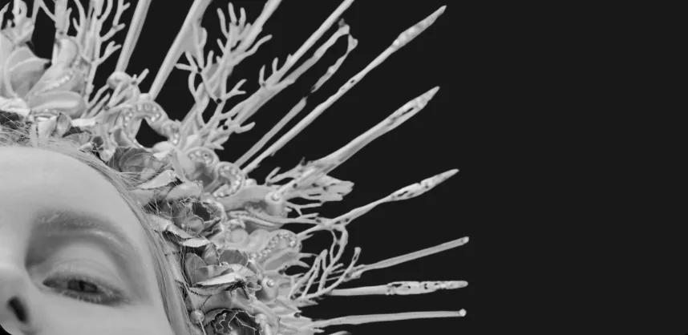
#morethanfair
Od lat wspieramy projekty i marki zorientowane na przyszłość i społecznie odpowiedzialne.
Wspieramy firmy w tworzeniu biznesu odpowiedzialnego, transparentnego i odpornego na wyzwania przyszłości. Pracujemy z markami, zarządami i założycielami od 2010 roku.
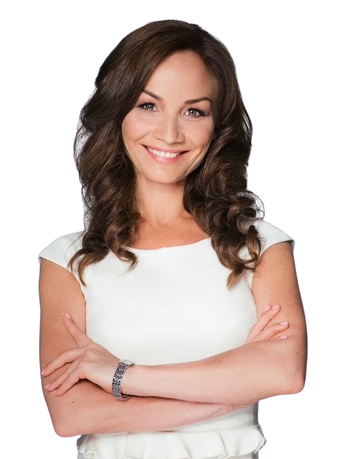
Małgorzata Kaczorekprezes zarządu KIWI ART
Łącząc doświadczenie PR, wiedzę z zakresu CSR oraz nowoczesne podejście do ESG, pomagamy organizacjom budować trwałą wartość: dla biznesu, społeczeństwa i środowiska.
buduje rozpoznawalność, zaufanie i sprzedaż
buduje reputację, odpowiedzialność i przewagę marki
buduje wiarygodność, prestiż i przyszłość firmy 2026+

Od lat wspieramy projekty i marki zorientowane na przyszłość i społecznie odpowiedzialne.
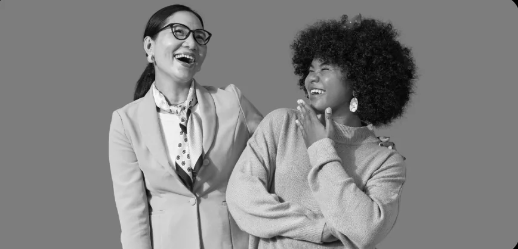
Współpracujemy z klientami, którzy rozumieją, że na końcu każdego biznesu zawsze jest człowiek, i na niego kierujemy nasz focus.
Dobrostan jednostki (klienta) jest najskuteczniejszym wskaźnikiem postępu, a czas kluczowym argumentem w każdej analizie, bo bezcennym.
Zintegrowana usługa doradcza dla marek, właścicieli i zarządów, którzy chcą budować biznes odpowiedzialny, widoczny, reputacyjnie bezpieczny i gotowy na oczekiwania rynku 2026+.
Łączymy strategiczny CSR, PR, przygotowanie pod ESG, zarządzanie reputacją oraz wsparcie w decyzjach komunikacyjnych i społecznie wrażliwych. To usługa dla organizacji, które nie szukają pojedynczych działań marketingowych, lecz partnera w rozwoju marki w obszarze zaufania, odpowiedzialności i przewagi konkurencyjnej.
W zależności od pakietu: konkretna liczba spotkań strategicznych, audyty, projektowanie działań, identyfikacja kluczowych ryzyk i szans, mapa działań i rekomendacji, konsultacje kryzysowe, wsparcie 24/7.
Wejście na poziom strategicznego zarządzania marką.
Pakiet strategiczny dla marek, które chcą rosnąć świadomie i bezpiecznie.
Dla właścicieli, zarządów i marek, które potrzebują wsparcia na poziomie decyzji strategicznych.
Z pakietów korzystają m.in. founderzy, kliniki premium, firmy rodzinne, sieci placówek medycznych, rozwijające się grupy i firmy przygotowujące się do skalowania, marki pod presją rynku, mediów i partnerów biznesowych.
kiwi-art.pl to strona matka naszych projektów. Każdy z nich ma własną stronę.
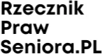
Mediacje i działania w obronie praw seniorów.
rzecznikprawseniora.pl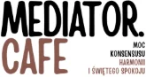
Marka mediacyjna KIWI ART.
mediatorcafe.pl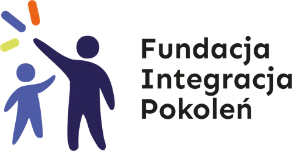
Projekt z rodziny KIWI ART.
fundacjaintegracja.org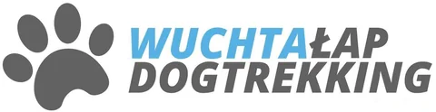
Dogtrekking, czyli wędrówki z psami.
wuchtalap.plMarki, z którymi pracowaliśmy:
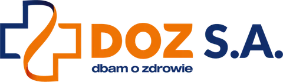
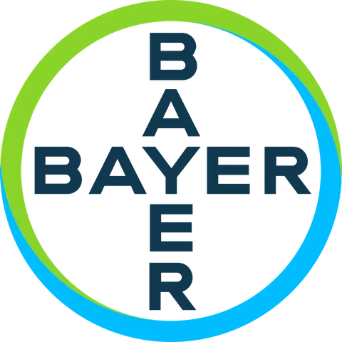
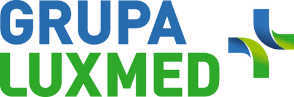
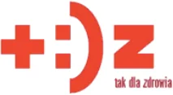
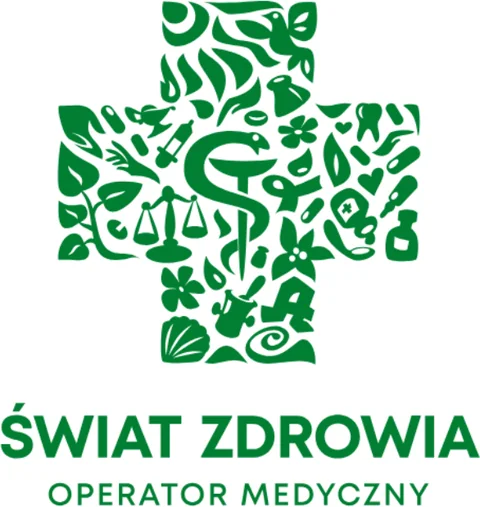
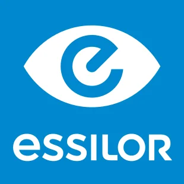
W zależności od pakietu to m.in.: konkretna liczba spotkań strategicznych, audyty, projektowanie działań, identyfikacja kluczowych ryzyk i szans, mapa działań i rekomendacji, konsultacje kryzysowe, wsparcie 24/7.
M.in. dla marek premium na etapie porządkowania: founderów, klinik premium, firm rodzinnych, sieci placówek medycznych, rozwijających się grup i firm przygotowujących się do skalowania, marek pod presją rynku, mediów i partnerów biznesowych.
Dziś reputacja, odpowiedzialność i widoczność nie są już odrębnymi obszarami. Tworzą jeden system zaufania wokół marki. Firmy, które chcą rosnąć stabilnie i prestiżowo, potrzebują strategicznego zarządzania narracją marki.
Masz pytania? Napisz lub zadzwoń, opowiedz o swojej marce, a zaproponuję zakres współpracy.
KIWI ART Sp. z o.o.
ul. Łubinowa 59, 87-100 Toruń
KRS 0000303835, NIP 956-221-70-86, REGON 340417780
kapitał zakładowy 125 000 zł
malgorzatakaczorek.pl